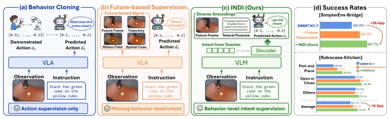
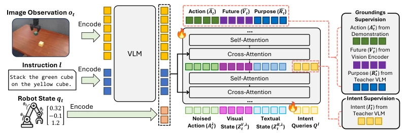
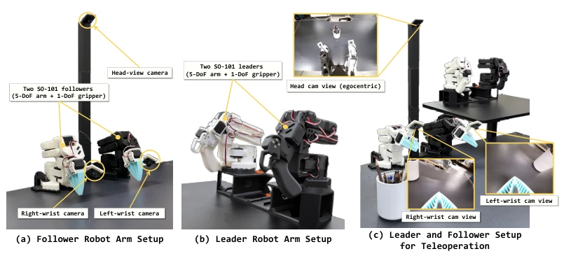
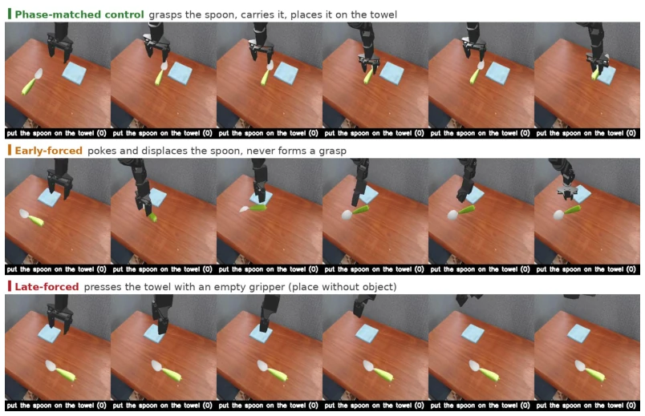
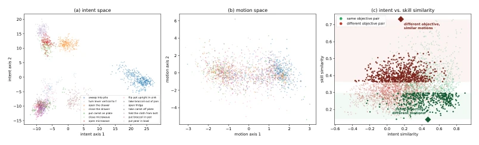
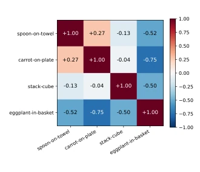
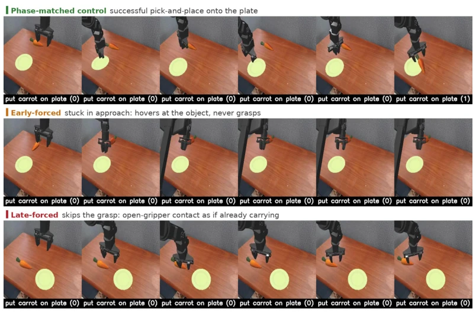
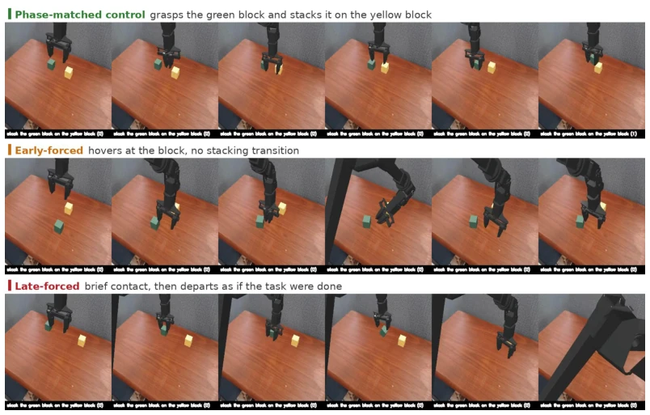
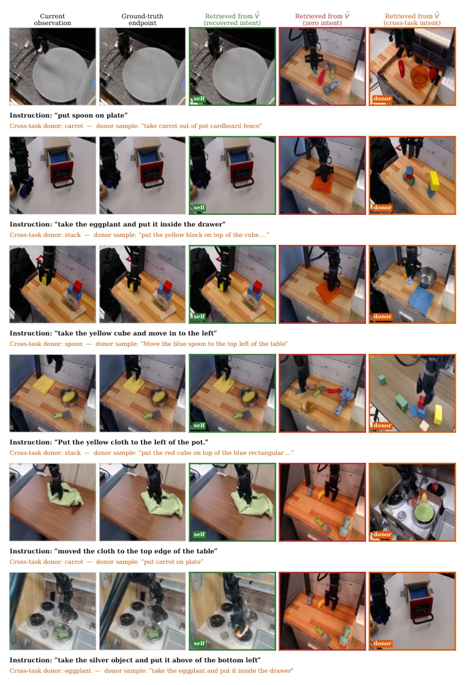
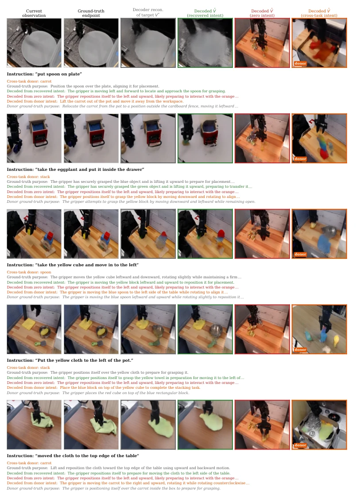

This paper imbues VLA models with "intent", attempting to solve the problem of robots "knowing what but not why". Although the Teacher is removed during deployment, training still relies on large models feeding data, which can be considered "reincarnation technology". The 20% improvement on SimplerEnv is indeed significant, especially for long-horizon tasks, but the improvement in Real-world is limited, indicating the gap between simulation and reality remains. Methodologically, treating intent as an intermediate state is more semantic than simply predicting future frames, but incurs a slight increase in computational overhead, and relies on the Teacher's semantic understanding capability; if the Teacher speaks nonsense, the Student follows suit. Overall, it is an effective patch to the VLA training paradigm, but still far from true "understanding".
研究动机Motivation
现有 VLA 模型主要依赖行为克隆 (BC) 或未来监督。BC 仅监督动作复现 (Zitkovich et al., 2023)，忽略了行为背后的局部目标；未来监督 (Black et al., 2024) 关注具体实现（如帧、轨迹），而非共享的语义目标。这导致相似动作在不同任务中目的不同，或同一目标有多种实现方式时模型难以泛化。例如，抓取动作可能是为了“放入篮子”或“移开障碍”，仅学动作无法区分。因此，需要显式建模行为级意图，让解码器理解指令下的局部目标，从而组织动作与执行进度，提升长视界任务的鲁棒性。
Existing VLA models mainly rely on Behavior Cloning (BC) or Future Supervision. BC only supervises action reproduction (Zitkovich et al., 2023), ignoring local goals behind behaviors; Future Supervision (Black et al., 2024) focuses on specific implementations (e.g., frames, trajectories), rather than shared semantic goals. This leads to similar actions having different purposes in different tasks, or models struggling to generalize when the same goal has multiple implementation methods. For example, a grasping action might be to "put into a basket" or "move an obstacle", learning only actions cannot distinguish. Therefore, explicit modeling of behavior-level intent is needed, allowing the decoder to understand local goals under instructions, thereby organizing actions and execution progress, improving robustness for long-horizon tasks.

Figure 1: From behavior cloning to intent distillation. (a) Behavior cloning directly supervises actions. (b) Future-based supervision adds representations of future states or motion. (c) INDI distills behavior-level intent from executed behavior into the action decoder, where it organizes action and representations of how the behavior unfolds and what it achieves. Right: GR00T-N1.7 results on SimplerEnv-Bridge and RoboCasa.
The overall framework is Intention Distillation (INDI). In the training phase, the frozen Teacher VLM (Cosmos-Reason2-8B) parses demonstration clips (observations, instructions, action summaries, videos), extracting multimodal intent representations, text goals, and visual endpoints as targets. The Student VLA decoder (e.g., GR00T-N1.7) introduces learnable Intent Queries to recover the Teacher's intent representation in intermediate layers. The recovered intent serves as an intermediate semantic state, participating in subsequent action prediction and visual/text grounding prediction. The Loss function includes action flow matching loss, intent alignment loss, Grounding representation alignment loss, and Margin Loss (forcing intent to influence downstream prediction). During deployment, the Teacher and goal generation module are removed, retaining only the Student decoder, generating intent internally using standard VLA inputs.

Figure 2: Overview of INDI. A training-only teacher VLM derives multimodal intent and textual- purpose targets from executed behavior, while a frozen visual encoder supplies the endpoint-visual target. The VLA decoder recovers intent at an intermediate layer and jointly predicts actions and latent visual and textual groundings, denoted by bVt and bRt. Dashed lines indicate training-only supervision, and all target-generation modules are removed at deployment.
Evaluated on SimplerEnv-Bridge, RoboCasa Kitchen, and real-world tasks. Baselines include GR00T-N1.7 and π0.5. On SimplerEnv, GR00T-N1.7 improved from 64.3% to 84.7%, with significant improvement in EP-Basket task (36%->96%). On RoboCasa, it rose from 64.1% to 70.3%. Average success rate on real-world tasks increased from 62.0% to 68.7%, with obvious gains in long-horizon tasks. Ablation experiments indicate intent supervision is the main source of gain, rather than extra capacity. Intervention experiments show recovered intent can distinguish task goals from execution phases, and causally affects execution results, proving its effectiveness as an intent representation.

Figure 4: Real-robot teleoperation and evaluation platform. We specify the leader and follower robot arm setups, consisting of 5-DoF arms with 1-DoF grippers, along with the multi-camera views.

Figure 8: Stage-forced intervention on Spoon. Rows show phase-matched, early-forced, and late- forced injection. Early forcing leaves the policy displacing the spoon without ever closing the grip- per. Late forcing skips the grasp entirely: the policy moves to the towel and presses down with an empty gripper, executing placement as if it were already carrying the object.
其他图片Other Figures

Figure 6: Intent captures objective beyond action-sequence realization. We operationalize skill as the executed action sequence. (a) Teacher intent targets separate 14 behavior objectives on held- out episodes. (b) A matched supervised projection of local action snippets yields weak objective separation. (c) In a projection-free comparison of progress-matched episode pairs, the same ob- jective realized by dissimilar action sequences remains more similar in intent space than different objectives realized by similar sequences. Light points show all eligible pairs, dark points show the selected contrast sets, and diamonds mark their means. Recovered policy intent exhibits the same ordering.

Figure 7: Task relatedness in recovered-intent space. Each entry reports centered cosine similarity between the recovered-intent centroids of two SimplerEnv tasks. Spoon and Carrot form the closest pair, while EP-Basket is the most separated from the other tasks.

Figure 9: Stage-forced intervention on Carrot. Early forcing leaves the policy hovering over the carrot without transitioning to grasp. Late forcing produces open-gripper contact, as if the object were already being transported.

Figure 10: Stage-forced intervention on Stack. Early forcing leaves the policy fumbling at the green block without initiating the stack. Late forcing produces brief contact followed by departure, as if the task were already complete.

Figure 11: Non-parametric visual-outcome readout. Each row shows the current observation, ground-truth endpoint, and endpoint retrieved from bVt under recovered, zero, and cross-task intent. Recovered intent retrieves the current behavior outcome, while cross-task intent redirects retrieval toward the injected behavior. Across the evaluated pairs, recovered intent retrieves the current end- point in 70.5% of cases. After cross-task replacement, the injected endpoint is retrieved in 78.6% of cases, while the original endpoint remains in only 0.1%.

Figure 12: Learned visual and textual readout of intent. Each row shows the current observation, ground-truth endpoint, visual reconstruction from V ⋆ t , and visual outcomes decoded from bVt under recovered, zero, and cross-task intent. The text below each row shows the ground-truth purpose and statements decoded from recovered, zero, and injected intent. Recovered intent produces an outcome and purpose consistent with the current behavior, while cross-task intent redirects both modalities toward the injected behavior.